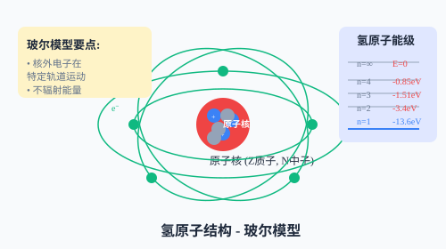
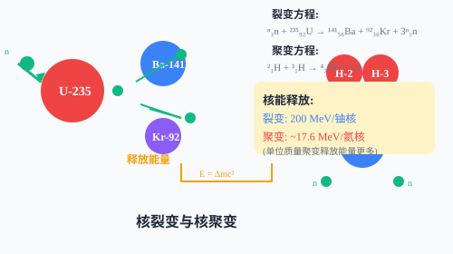

相對論基礎、量子力學、原子結構與核物理


調整入射光頻率，觀察光電子的最大初動能變化！
0 ×10⁻¹⁹ J
0 ×10⁻¹⁹ J
-
選擇不同的能級躍遷，觀察發射或吸收的光子！
0 eV
0 nm
-
運動時鐘變慢，Δt₀為固有時間
運動方向長度收縮，L₀為固有長度
運動質量大於靜止質量
質量和能量等價，可相互轉換
普朗克常量 $h = 6.63\times10^{-34}$ J·s
W₀為逸出功
基態能量，n=1,2,3...
反應前後質量差
T為半衰期
1. 相對性原理：物理規律在所有慣性系中都相同
2. 光速不變原理：真空中的光速在任何慣性系中都等於c
光子能量等於電子逸出所需能量（逸出功）加上最大初動能。成功解釋了光電效應的所有實驗規律。
氫原子的核外電子在特定軌道上運動，不輻射能量；電子從高能級向低能級躍遷時，輻射光子；從低能級向高能級躍遷時，吸收光子。
核反應中遵循：質量數守恆、電荷數守恆、能量守恆、動量守恆。核反應前後元素種類可能改變，但總核子數不變。
$E=mc^2$揭示了質量和能量的等價關係。核反應中出現的質量虧損會以能量形式釋放出來，這是核能的來源。